Composite Module (compmech.composite)¶
The compmech.composite module includes functions used to calculate laminate properties based on input data of stacking sequence and lamina properties.
The most convenient usage is probably using the compmech.composite.laminate.read_stack() function:
from compmech.composite.laminate import read_stack
laminaprop = (E11, E22, nu12, G12, G13, G23)
plyt = ply_thickness
stack = [0, 90, +45, -45]
lam = read_stack(stack, plyt=plyt, laminaprop=laminaprop)
Where the laminate stiffness matrix, the often called ABD matrix, with shape=(6, 6), can be accessed using:
>>> lam.ABD
and when shear stiffnesses are required, the ABDE matrix, with shape=(8, 8):
>>> lam.ABDE
Composite Laminate Module (compmech.composite.laminate)¶
- class compmech.composite.laminate.Laminate[source]¶
attribute description plies list of plies t total thickness of the laminate e1 equivalent laminate modulus in 1 direction e2 equivalent laminate modulus in 2 direction g12 equivalent laminate shear modulus in 12 direction nu12 equivalent laminate Poisson ratio in 12 direction nu21 equivalent laminate Poisson ratio in 21 direction xiA laminate parameters for extensional matrix A xiB laminate parameters for extension-bending matrix B xiD laminate parameters for bending matrix D A laminate extension matrix B laminate extension-bending matrix D laminate bending matrix E laminate transferse shear matrix ABD laminate ABD matrix ABDE laminate ABD matrix with transverse shear terms Methods
calc_ABDE_from_lamination_parameters() Use the ABDE matrix based on lamination parameters. calc_constitutive_matrix() Calculates the laminate constitutive matrix calc_equivalent_modulus() Calculates the equivalent laminate properties. calc_lamination_parameters() Calculate the lamination parameters. force_balanced_LP() Force balanced lamination parameters force_orthotropic() Force an orthotropic laminate force_symmetric() Force a symmetric laminate force_symmetric_LP() Force symmetric lamination parameters rebuild() - calc_ABDE_from_lamination_parameters()[source]¶
Use the ABDE matrix based on lamination parameters.
Given the lamination parameters xiA, xiB, xiC and xiD, the ABD matrix is calculated.
- calc_constitutive_matrix()[source]¶
Calculates the laminate constitutive matrix
This is the commonly called ABD matrix with shape=(6, 6) when the classical laminated plate theory is used, or the ABDE matrix when the first-order shear deformation theory is used, containing the transverse shear terms.
- calc_equivalent_modulus()[source]¶
Calculates the equivalent laminate properties.
- The following attributes are calculated:
- e1, e2, g12, nu12, nu21
- calc_lamination_parameters()[source]¶
Calculate the lamination parameters.
- The following attributes are calculated:
- xiA, xiB, xiD, xiE
- force_balanced_LP()[source]¶
Force balanced lamination parameters
The lamination parameters 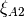 and 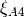 are set to null to force a balanced laminate.
- force_orthotropic()[source]¶
Force an orthotropic laminate
The terms 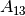, 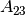, 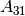, 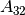, 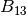, 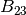, 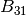, 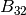, 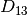, 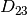, 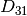, 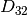 are set to zero to force an orthotropic laminate.
 terms of the constitutive matrix are set to zero.
terms of the constitutive matrix are set to zero.- compmech.composite.laminate.read_lamination_parameters(thickness, laminaprop, xiA1, xiA2, xiA3, xiA4, xiB1, xiB2, xiB3, xiB4, xiD1, xiD2, xiD3, xiD4, xiE1, xiE2, xiE3, xiE4)[source]¶
Calculates a laminate based on the lamination parameters.
The lamination parameters:
 , 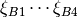,
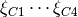, 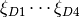,
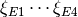
, 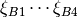,
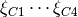, 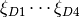,
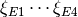are used to calculate the laminate constitutive matrix.
Parameters: thickness : float
The total thickness of the laminate
laminaprop : tuple
The laminaprop tuple used to define the laminate material.
xiA1 to xiD4 : float
The 16 lamination parameters used to define the laminate.
Returns: lam : Laminate
laminate with the ABD and ABDE matrices already calculated
- compmech.composite.laminate.read_stack(stack, plyt=None, laminaprop=None, plyts=, []laminaprops=[])[source]¶
Read a laminate stacking sequence data.
An Laminate object is returned based on the inputs given.
Parameters: stack : list
Angles of the stacking sequence in degrees.
plyt : float, optional
When all plies have the same thickness, plyt can be supplied.
laminaprop : tuple, optional
When all plies have the same material properties, laminaprop can be supplied.
plyts : list, optional
A list of floats with the thickness of each ply.
laminaprops : list, optional
A list of tuples with a laminaprop for each ply.
Notes
plyt or plyts must be supplied laminaprop or laminaprops must be supplied
For orthotropic plies, the laminaprop should be:
laminaprop = (E11, E22, nu12, G12, G13, G23)
For isotropic pliey, the laminaprop should be:
laminaprop = (E, E, nu)
Composite Lamina Module (compmech.composite.lamina)¶
- class compmech.composite.lamina.Lamina[source]¶
attribute description plyid id of the composite lamina matobj a pointer to a MatLamina object t ply thickness theta ply angle in degrees L transformation matrix for displacements to laminate csys R transformation matrix for stresses to laminate csys T transformation matrix for stresses to lamina csys QL constitutive matrix for plane-stress in laminate csys laminates laminates that contain this lamina Methods
rebuild()
Composite Matlamina Module (compmech.composite.matlamina)¶
- class compmech.composite.matlamina.MatLamina[source]¶
Orthotropic material lamina
attributes description e1 Young Modulus in direction 1 e2 Young Modulus in direction 2 g12 in-plane shear modulus g13 transverse shear modulus for plane 1-Z g23 transverse shear modulus for plane 2-Z nu12 Poisson’s ratio 12 nu13 Poisson’s ratio 13 nu23 Poisson’s ratio 23 nu21 Poisson’s ratio 21: use formula nu12/e1 = nu21/e2 nu31 Poisson’s ratio 31: use formula nu31/e3 = nu13/e1 nu32 Poisson’s ratio 32: use formula nu23/e2 = nu32/e3 rho especific mass (mass / volume) a1 thermal expansion coeffiecient in direction 1 a2 thermal expansion coeffiecient in direction 2 a3 thermal expansion coeffiecient in direction 3 tref reference temperature st1,st2 allowable tensile stresses for directions 1 and 2 sc1,sc2 allowable compressive stresses for directions 1 and 2 ss12 allowable in-plane stress for shear strn allowable strain for direction 1 q11 lamina constitutive constant 11 q12 lamina constitutive constant 12 q13 lamina constitutive constant 13 q21 lamina constitutive constant 21 q22 lamina constitutive constant 22 q23 lamina constitutive constant 23 q31 lamina constitutive constant 31 q32 lamina constitutive constant 32 q33 lamina constitutive constant 33 q44 lamina constitutive constant 44 q55 lamina constitutive constant 55 q66 lamina constitutive constant 66 u matrix with lamina invariants c matrix with lamina stiffness coefficients Notes
For isotropic materials when the user defines
 and
and  ,
,  will be
recaculated based on equation: 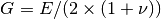; in a lower
priority if the user defines and , will be recaculated based
on equation: 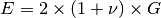.
will be
recaculated based on equation: 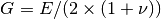; in a lower
priority if the user defines and , will be recaculated based
on equation: 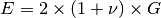.Methods
read_inputs([inputs]) rebuild()
- compmech.composite.matlamina.read_laminaprop(laminaprop=None)[source]¶
Returns a MatLamina object based on an input laminaprop tuple
Parameters: laminaprop : list or tuple
Tuple containing the folliwing entries:
(e1, e2, nu12, g12, g13, g23, e3, nu13, nu23)
for othotropic materials the user can only supply:
(e1, e2, nu12, g12, g13, g23)
for isotropic materials the user can only supply:
(e1, e2, nu12)
symbol value e1 Young Module in direction 1 e2 Young Module in direction 2 nu12 12 Poisson’s ratio g12 12 Shear Modulus g13 13 Shear Modulus g23 13 Shear Modulus e3 Young Module in direction 3 nu13 13 Poisson’s ratio nu23 23 Poisson’s ratio Returns: matlam : MatLamina
A MatLamina object.